Surat Online
Informasi alur surat pengantar, surat domisili, dan layanan administratif warga.
Lihat alur layananWebsite publik ini menjadi pusat informasi RW10 Pabuaran: profil wilayah, pengumuman, agenda kegiatan, etalase UMKM, kontak penting, hingga program WiFi Gratis Pelajar.
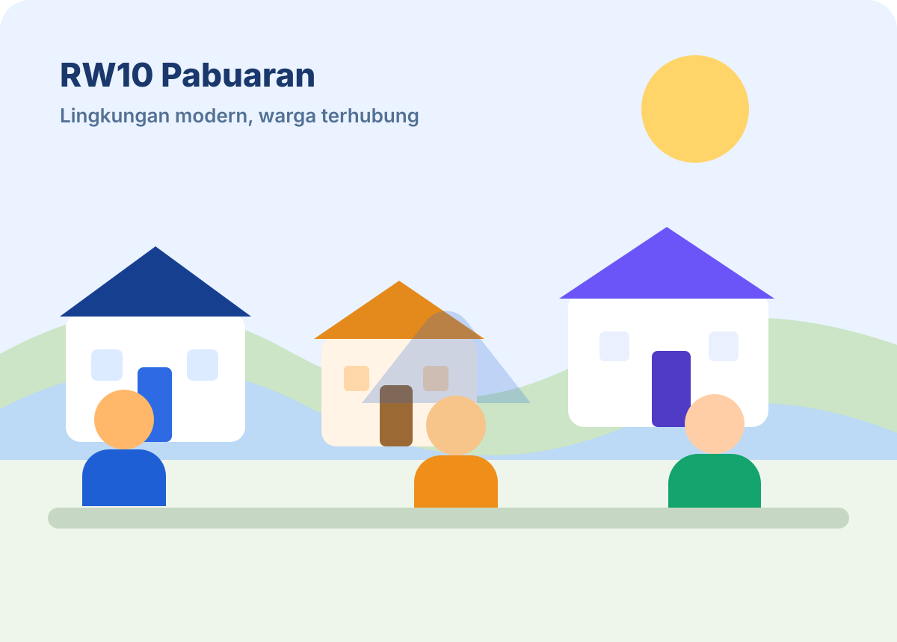
Informasi alur surat pengantar, surat domisili, dan layanan administratif warga.
Lihat alur layananInformasi kanal pembayaran iuran, kas lingkungan, serta ringkasan transparansi.
Lihat transparansiDaftar nomor penting dan akses cepat ke aplikasi internal untuk fitur SOS warga.
Lihat kontakProgram akses internet belajar untuk pelajar di wilayah RW10 dengan alur pengajuan yang jelas.
Pelajari programRW10+ memisahkan website publik dan aplikasi internal. Website dipakai untuk publikasi, informasi umum, dan promosi kegiatan warga. Aplikasi internal tetap dipakai untuk data warga, surat, iuran, pengaduan, CCTV, dan operasional pengurus.
Masuk ke aplikasi internalPengumuman, jadwal, dan informasi layanan dapat dilihat tanpa login.
Satu sistem warna, satu tipografi, dan satu gaya komponen untuk seluruh halaman.
Setiap tombol mengarah ke section yang relevan, tanpa dead link dan tanpa form palsu.
Dapat dikembangkan ke CMS, data dinamis, atau integrasi dengan aplikasi internal.
Karena website publik tidak menyimpan data warga, semua layanan yang membutuhkan data pribadi diarahkan ke aplikasi internal. Website ini hanya menjelaskan alur dan memberikan titik masuk yang benar.
Warga membaca jenis layanan, persyaratan, dan alur proses dari website publik.
Untuk surat, iuran, pengaduan, atau SOS, warga diarahkan ke aplikasi RW10+ internal.
Ketua RT, pengurus RW, atau satpam memproses sesuai alur yang sudah ada di sistem.
Warga memantau progres melalui aplikasi, sementara website tetap menjadi pusat informasi publik.
Program ini ditujukan untuk pelajar yang tinggal di wilayah RW10 dan membutuhkan akses internet untuk kegiatan pendidikan. Flow ditampilkan transparan agar mudah dipahami orang tua maupun pengurus.
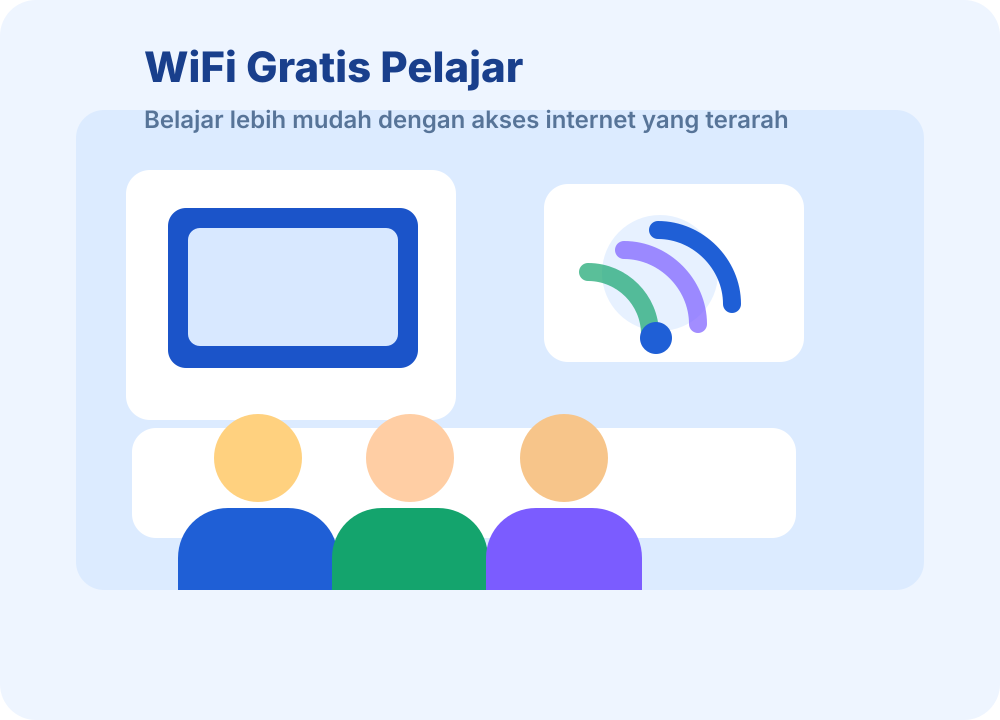
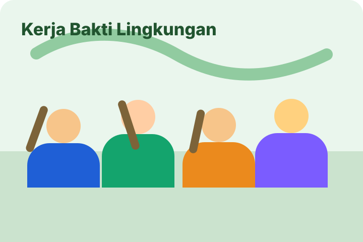
Warga dari beberapa RT bergotong royong membersihkan area jalan lingkungan dan fasilitas umum.
12 Mei 2026Agenda mencakup evaluasi keamanan, kebersihan, transparansi kas, serta program WiFi Gratis Pelajar.
10 Mei 2026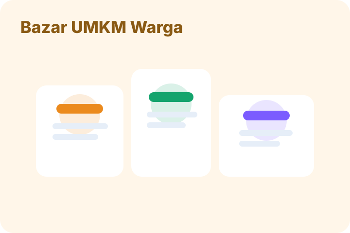
Produk kuliner, laundry, sembako, dan usaha rumahan warga ditampilkan lebih menarik melalui portal RW10+.
08 Mei 2026Balai RW10 · 19.30 – 21.00 WIB
Pembahasan program kerja, evaluasi bulanan, dan kebutuhan warga.Seluruh RT · 07.00 – 10.00 WIB
Fokus pembersihan drainase, taman, dan jalan lingkungan.Balai RW10 · 08.00 – 11.00 WIB
Pemeriksaan rutin dan edukasi kesehatan keluarga.Website publik hanya menampilkan ringkasan yang aman untuk dibagikan. Detail transaksi tetap dikelola di sistem internal.
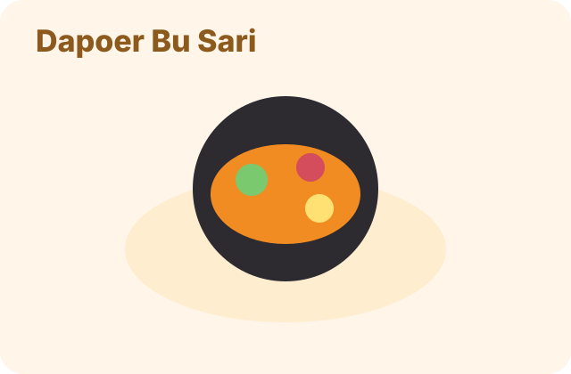
Makanan rumahan · RT 01
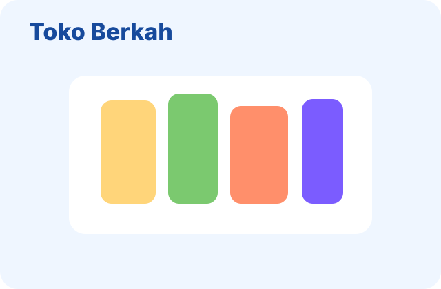
Sembako & kebutuhan harian · RT 03
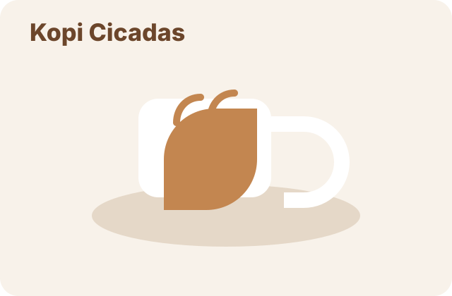
Minuman & camilan · RT 05
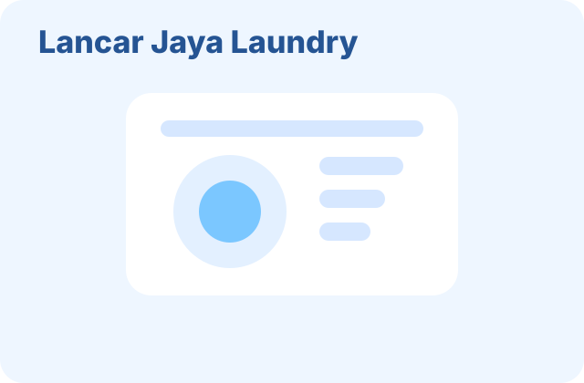
Jasa laundry · RT 08
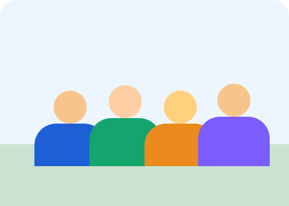
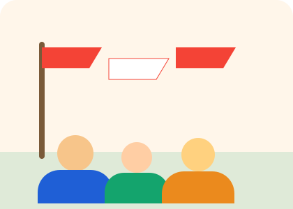
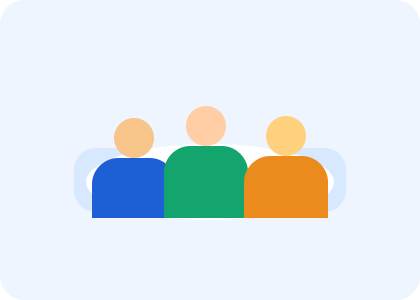
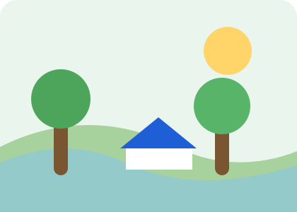
Semua informasi di bawah ini adalah contoh tampilan dan bisa diganti sesuai data lingkungan sebenarnya.
RW10 Pabuaran, Kel. Pabuaran, Kec. Bojonggede, Kab. Bogor
0812-3456-7890 · Senin–Jumat · 08.00–17.00 WIB
info@rw10pabuaran.id
Gunakan untuk surat, iuran, pengaduan, SOS, dan operasional pengurus.
Buka aplikasi internal